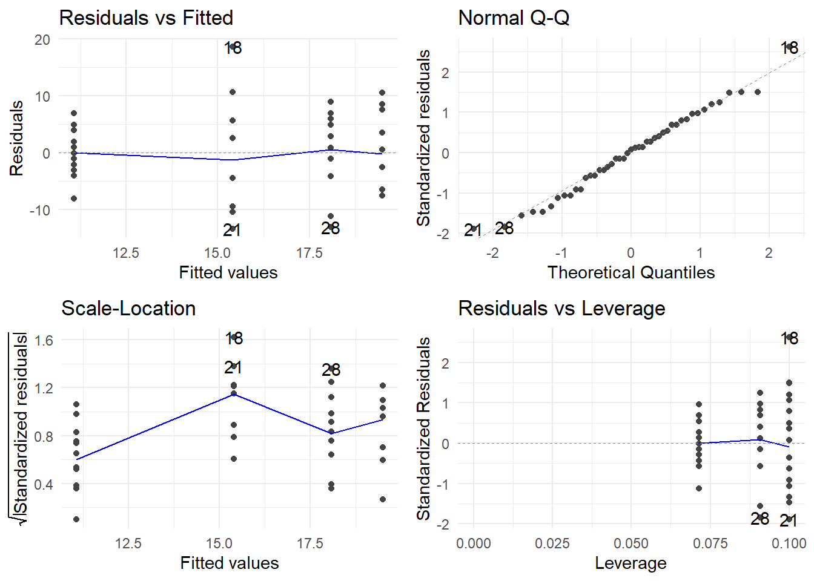

Chapter 7 More on multiple linear regression
7.1 Model comparision – Reduced \(F\)-tests
Occasionally, we might be interested in more specialized tests of a multiple regression model’s \(\beta\) parameters. For example, consider the property appraisals data (again). The regression model we are using is
\[\textrm{Sale price} = \beta_0 + \beta_1(\textrm{Land value}) + \beta_2(\textrm{Improvements value}) + \beta_3(\textrm{Area}) + \varepsilon\] Think about questions like these:
- Do the two appraisals collectively have a significant effect on mean sale price?
- Is the effect of land value appraisal different from the effect of improvements value appraisal on the mean sale price?
To address questions like these, we first need to translate them into equivalent expressions in terms of the model’s \(\beta\) parameters. Doing so will give rise to hypotheses we can test using the principle of ANOVA that was introduced earlier.
Logic. To formulate an approach to conducting the test, let’s work on the first question above: “Do the two appraisals collectively have a significant effect on mean sale price?” To get started, you need to think about what the null and alternative hypotheses would be to test such a statement. They would look like this:
- \(H_0\): The two appraisals collectively have no effect on mean sale price
- \(H_a\): At least one of the two appraisals has an effect on mean sale price
Now, translate what this means in terms of the model’s \(\beta\) parameters:
- \(H_0\): \(\beta_1 = \beta_2 = 0\)
- \(H_a\): at least one of \(\beta_1\) or \(\beta_2\) is not 0
How we proceeded with tests like those in the previous chapters where we essentially compared two models: one involving a “full” model and the other involving a “reduced” null model, and checking if there is a significant difference between them. The transition from the full model to the reduced model is to impose the null hypothesis on the full model. Thinking this way, the hypotheses above may be rewritten as:
- \(H_0\): the model is \(\textrm{Sale price} = \beta_0 + \beta_3(\textrm{Area}) + \varepsilon\)
- \(H_a\): the model is \(\textrm{Sale price} = \beta_0 + \beta_1(\textrm{Land value}) + \beta_2(\textrm{Improvement value}) + \beta_3(\textrm{Area}) + \varepsilon\)
The R function anova() will do the computation of the ANOVA \(F\)-statistic and its associated \(p\)-value for this test, once you feed it the fitted full and reduced R model objects. The form of the R function is anova(reducedmodel, fullmodel)
So, the test of \(H_0\): The two appraisals collectively have no effect on mean sale price (i.e. \(\beta_1 = \beta_2 = 0\)) is conducted as follows (recall appraisal.fit is the full model):
reduced.appraisal.fit <- lm(saleprice ~ area, data=appraisal)
anova(reduced.appraisal.fit, appraisal.fit)## Analysis of Variance Table
##
## Model 1: saleprice ~ area
## Model 2: saleprice ~ landvalue + impvalue + area
## Res.Df RSS Df Sum of Sq F Pr(>F)
## 1 18 2.732e+09
## 2 16 1.002e+09 2 1.729e+09 13.8 0.000329 ***
## ---
## Signif. codes: 0 '***' 0.001 '**' 0.01 '*' 0.05 '.' 0.1 ' ' 1The \(F\)-statistic value is 13.802, with 2 and 16 degrees of freedom. The \(p\)-value is 0.0003, so we reject \(H_0\). There is sufficient evidence to conclude that the appraisals collectively have a significant effect on mean sale price.
Before doing one more example, here is a summary of the steps involved:
- Fit a full model, and save it as an R model object.
- Impose your null hypothesis \(H_0\) onto the full model to create the reduced model.
- Fit the reduced model, and save it as an R model object.
- Run the ANOVA F-test by issuing
anova(reducedmodel, fullmodel).
We now perform another example to demonstrate further functionality. Is the effect of land value appraisal different from the effect of improvements value appraisal on the mean sale price?
The null and alternative hypotheses for testing this can be expressed as follows:
- \(H_0\): Land value appraisal and improvements value appraisal have the same effect
- \(H_a\): Land value appraisal and improvements value appraisal have different effects
In terms of the model’s \(\beta\) parameters, this null hypothesis is just stating that \(\beta_1\) and \(\beta_2\) are equal (but not necessarily 0). So, the hypotheses may be rewritten as
\[H_0: \beta_1 = \beta_2 ~~~~\textrm{versus}~~~~ H_a: \beta_1 \neq \beta_2\]
Let’s denote the common value of \(\beta_1\) and \(\beta_2\) under the null hypothesis using the symbol \(\gamma\). Then it is crucial to see that we can write the hypotheses in terms of full and reduced “null” models as follows:
- \(H_0\): the model is \(\textrm{Sale price} = \beta_0 + \gamma(\textrm{Land}) + \gamma(\textrm{Improv}) + \beta_3(\textrm{Area}) + \varepsilon\)
- \(H_a\): the model is \(\textrm{Sale price} = \beta_0 + \beta_1(\textrm{Land}) + \beta_2(\textrm{Improv}) + \beta_3(\textrm{Area}) + \varepsilon\)
or equivalently,
- \(H_0\): the model is \(\textrm{Sale price} = \beta_0 + \gamma(\textrm{Land} + \textrm{Improv}) + \beta_3(\textrm{Area}) + \varepsilon\)
- \(H_a\): the model is \(\textrm{Sale price} = \beta_0 + \beta_1(\textrm{Land}) + \beta_2(\textrm{Improv}) + \beta_3(\textrm{Area}) + \varepsilon\)
Note in this last notation the null hypothesis essentially is performing a multiple regression on two predictor variables: Area and a new variable Land + Improv. We can perform this test in one of two ways.
Method 1 - Creating a new variable
appraisal <- appraisal %>%
mutate(LandImprov = landvalue + impvalue)
red.model1 <- lm(saleprice ~ LandImprov + area, data=appraisal)
anova(red.model1, appraisal.fit)## Analysis of Variance Table
##
## Model 1: saleprice ~ LandImprov + area
## Model 2: saleprice ~ landvalue + impvalue + area
## Res.Df RSS Df Sum of Sq F Pr(>F)
## 1 17 1.002e+09
## 2 16 1.002e+09 1 426.8 0 0.998Method 2 - Calculation “on the fly”
The I() function in R can be used to create a single new predictor for the null model by calculating the sum of the landvalue and impvalue variables “on the fly.” It is important to note this variable is not saved for future use. Here is the analysis:
red.model2 <- lm(saleprice ~ I(landvalue + impvalue) + area, data=appraisal)
anova(red.model2, appraisal.fit)## Analysis of Variance Table
##
## Model 1: saleprice ~ I(landvalue + impvalue) + area
## Model 2: saleprice ~ landvalue + impvalue + area
## Res.Df RSS Df Sum of Sq F Pr(>F)
## 1 17 1.002e+09
## 2 16 1.002e+09 1 426.8 0 0.998In both cases we see the \(F\)-statistic value is essentially 0, with 1 and 16 degrees of freedom. The \(p\)-value is 0.998, so we fail to reject \(H_0\). There is insufficient evidence to conclude that land value appraisal and improvements value appraisal have different effects on the mean sale price of a property.
Lastly, note the two fitted reduced models are the same
red.model1##
## Call:
## lm(formula = saleprice ~ LandImprov + area, data = appraisal)
##
## Coefficients:
## (Intercept) LandImprov area
## 1386.277 0.819 13.605red.model2##
## Call:
## lm(formula = saleprice ~ I(landvalue + impvalue) + area, data = appraisal)
##
## Coefficients:
## (Intercept) I(landvalue + impvalue) area
## 1386.277 0.819 13.605Also note the fitted full model
appraisal.fit##
## Call:
## lm(formula = saleprice ~ landvalue + impvalue + area, data = appraisal)
##
## Coefficients:
## (Intercept) landvalue impvalue area
## 1384.197 0.818 0.819 13.605The coefficients on landvalue and impvalue are nearly identical (differ in the third decimal place). It should not be too surprising we failed to reject the null hypothesis that they were statistically the same.
7.2 Categorical Predictor Variables
Up to now, all of our regression examples have included predictors that have been numerically valued variables; i.e., they have been quantitative variables. Predictors that are qualitative in nature (e.g., gender, ethnic group, eye color) are usually called categorical predictors or factors. How can predictors such as these be incorporated into a regression analysis?
To use qualitative predictors in a regression model, we need to recode their values. The way to do this is to create one or more dummy variables. Dummy variables are variables that only take on the value 0 or 1, indicating the absence (0) or presence (1) of a particular qualitative characteristic.
7.2.1 A qualitative predictor with two levels
Suppose we are interested in the effect of a fixed dosage of two different medications on reducing blood glucose level in men. One of these meds is an experimental drug (let’s call it drug A), and the other is a placebo (drug P). For a two-level variable such as this, one dummy variable is all that is required to distinguish between the two drugs. We could define our dummy variable as follows:
\[X = \left\{\begin{array}{ll} 0 & \textrm{if drug } P \\ 1 & \textrm{if drug } A\end{array}\right.\]
\(X\) is now a “numerically valued” (0 or 1) variable that simply serves to indicate that drug A was the administered drug. In such a coding, the placebo will serve as a reference (or “baseline”) group to which the drug A group will be compared. We will see this when we construct models using \(X\).
How does the regression model look? First, we fit a linear model in the usual way using \(X\) as the predictor. The model form is given by
\[Y = \beta_0 + \beta_1 X + \varepsilon\]
Writing out the model explicitly for both drug groups will prove enlightening. Since \(X\) is basically an on/off switch indicating if \(A\) is the administered drug, the model parameters and their interpretations break down as follows:
\[\begin{array}{ccc} \hline \textbf{Drug} & \mathbf{X} & \textbf{Model for mean response} \\ \hline Placebo & 0 & \mu_{placebo} = \beta_0 + \beta_1(0) = \beta_0 \\ A & 1 & \mu_A = \beta_0 + \beta_1(1) = \beta_0 + \beta_1 \\ \hline \end{array}\]
Key items to notice:
- The structural part of the model under the placebo is just \(\beta_0\). So, \(\beta_0\) represents \(\mu_{placebo}\), the mean response for \(Y\) under the placebo.
- The structural part of the model under drug \(A\) is \(\beta_0 + \beta_1\). So, \(\beta_0 + \beta_1\) represents \(\mu_A\), the mean response for \(Y\) under drug \(A\).
- Now, put these two facts together. What does \(\beta_1\) alone estimate? It should quickly become clear that \(\beta_1\) represents the change in the mean response for \(Y\) from \(placebo\) to drug \(A\). In other words, \(\beta_1\) is the key parameter of interest in the model, since it is an estimate of \(\mu_A - \mu_{placebo}\). So, the usual regression t-test of \(H_0: \beta_1 = 0\) is really a test of \(H_0: \mu_A - \mu_{placebo} = 0\), or equivalently, \(H_0: \mu_A = \mu_{placebo}\) (essentially the two-sample t-test). Let’s consider an example.
Example. Previous research indicates that children borne by diabetic mothers may suffer from obesity, high blood pressure and glucose intolerance. Independent random samples of adolescent offspring of diabetic and non-diabetic mothers were evaluated for potential differences in vital measurements, including blood pressure. The data are in the file diabeticoffspring.txt in our data repository. Use this data to (a) test to see if there is a difference in mean systolic BP between diabetic and non-diabetic offspring, and if so (b) estimate the true mean difference using a 95% CI. This is essentially an intro statistics problem.
We begin by obtaining the data.
www <- "http://www.users.miamioh.edu/hughesmr/sta363/diabeticoffspring.txt"
diabetes <- read.table(www, header=TRUE)
head(diabetes)## sys.bp mother
## 1 127 diabetic
## 2 137 diabetic
## 3 112 diabetic
## 4 108 diabetic
## 5 123 diabetic
## 6 120 diabeticNow we perform a two-sample t-test.
t.test(sys.bp ~ mother, var.equal=TRUE, data=diabetes)##
## Two Sample t-test
##
## data: sys.bp by mother
## t = 4.559, df = 177, p-value = 9.58e-06
## alternative hypothesis: true difference in means between group diabetic and group nondiabetic is not equal to 0
## 95 percent confidence interval:
## 4.54379 11.48121
## sample estimates:
## mean in group diabetic mean in group nondiabetic
## 118.000 109.987Now, let’s re-do this as a regression problem using a quantitative predictor. If the assumptions underlying the independent samples t-test are met, then the assumptions underlying a regression approach to the problem are also met (we will check these momentarily).
Note that the variable mother is a character variable in the data frame, R automatically treates it as a qualitative variable and creates a dummy variable for you.
class(diabetes$mother)## [1] "character"So we can perform regression as before, and R will handle the factor variable correctly.
diabetes.fit <- lm(sys.bp ~ mother, data=diabetes)
summary(diabetes.fit)##
## Call:
## lm(formula = sys.bp ~ mother, data = diabetes)
##
## Residuals:
## Min 1Q Median 3Q Max
## -33.00 -6.99 -0.99 8.00 32.01
##
## Coefficients:
## Estimate Std. Error t value Pr(>|t|)
## (Intercept) 118.00 1.18 100.42 < 2e-16 ***
## mothernondiabetic -8.01 1.76 -4.56 9.6e-06 ***
## ---
## Signif. codes: 0 '***' 0.001 '**' 0.01 '*' 0.05 '.' 0.1 ' ' 1
##
## Residual standard error: 11.7 on 177 degrees of freedom
## Multiple R-squared: 0.105, Adjusted R-squared: 0.1
## F-statistic: 20.8 on 1 and 177 DF, p-value: 9.58e-06Note that the independent samples t-test and the regression t-test for \(\beta_1\) produce identical \(p\)-values. That’s because they both test the exact same hypothesis. Also note that the estimate for \(\beta_{1}\) in the regression model is \(b_1 = –8.013\), which is what you get when you calculate the difference the two group’s mean estimates (109.9875 – 118.0000).
You should note that R has labeled the predictor variable mothernondiabetic. This is your indication as to the coding scheme used by R for the qualitative predictor. In this case, R created a dummy variable as
\[X = \left\{\begin{array}{ll} 0 & \textrm{if mother is } diabetic \\ 1 & \textrm{if mother is } not~diabetic\end{array}\right.\]
and so we can interpret the meaning of the \(\beta\) parameters in the model \(Y = \beta_0 + \beta_1 X + \varepsilon\):
\[\begin{array}{ccc} \hline \textbf{Mother} & \mathbf{X} & \textbf{Model for mean response} \\ \hline Diabetic & 0 & \mu_{diabetic} = \beta_0 + \beta_1(0) = \beta_0 \\ Not~diabetic & 1 & \mu_{nondiabetic} = \beta_0 + \beta_1(1) = \beta_0 + \beta_1 \\ \hline \end{array}\]
- \(\beta_0\) is the true mean systolic blood pressure of diabetic mothers.
- \(\beta_0 + \beta_1\) is the true mean systolic blood pressure of nondiabetic mothers.
- Therefore, \(\beta_1 = (\beta_0 + \beta_1) – \beta_0\) is the true mean change in systolic blood pressure from diabetic to nondiabetic mothers.
Confidence intervals for the \(\beta\) parameters in this regression model should be interpreted accordingly, and are found the same as before using confint():
confint(diabetes.fit)## 2.5 % 97.5 %
## (Intercept) 115.6811 120.31892
## mothernondiabetic -11.4812 -4.54379So, our interpretations are as follows:
- \(b_0 = 118.0\) is our estimate of \(\beta_0\), the true mean systolic blood pressure of diabetic mothers. The 95% CI for \(\beta_0\) is (115.68, 120.32). Thus, we can be 95% confident that the true mean systolic blood pressure of diabetic mothers is between 115.68 to 120.32.
- \(b_1 = -8.013\) is our estimate of \(\beta_1\), the true mean change in systolic blood pressure from diabetic to nondiabetic mothers. The 95% CI for \(\beta_1\) is (–11.48, –4.54). Thus, we can be 95% confident that the true mean systolic blood pressure in nondiabetic mothers is between 4.54 to 11.48 lower than in diabetic mothers.
If you look up at the original independent samples t-test output, you’ll see this same confidence interval expressed in terms of \(\mu_{diabetic} – \mu_{nondiabetic}\).
Important. When we find confidence intervals for the \(\beta\) parameters in a regression model with a qualitative predictor, it is imperative to know the interpretation of each of the \(\beta\) parameters in the context of the problem. In other words, you need to know both of
- The form of the model used (in the last example, this was \(Y = \beta_0 + \beta_1 X + \varepsilon\))
- The manner of coding used for the qualitative variable (here, \(X=1\) is a non-diabetic mother).
7.2.2 A qualitative predictor with more than two levels
When using a qualitative predictor with more than two levels, we must use a coding scheme (i.e., a method of constructing dummy variables) that adequately distinguishes between all the levels of the qualitative predictor. Basically, let this be your guide:
In general, if a factor has \(k\) levels, we will require \(k – 1\) dummy variables to sufficiently code the factor for regression.
For example, consider a study of the efficacy of four drugs (\(A\), \(B\), \(C\) and a placebo \(P\)) on glucose reduction. Coding up these 4 drugs in the regression will require 4 – 1 = 3 dummy variables. We have flexibility in how we could define these three dummies, but here is probably the most meaningful way given the context of the experiment:
\[I_A = \left\{\begin{array}{ll} 1 & \textrm{if drug } A \\ 0 & \textrm{otherwise}\end{array}\right., ~~~ I_B = \left\{\begin{array}{ll} 1 & \textrm{if drug } B \\ 0 & \textrm{otherwise}\end{array}\right.,~~~ I_C = \left\{\begin{array}{ll} 1 & \textrm{if drug } C \\ 0 & \textrm{otherwise}\end{array}\right.\] \(I_A\) serves as an indicator that drug \(A\) was administered, \(I_B\) for drug \(B\), and \(I_C\) for drug \(C\). The model may be written as
\[Y = \beta_0 + \beta_1(I_A) + \beta_2(I_B) + \beta_3(I_C) + \varepsilon\]
So how do we indicate when the placebo \(P\) is the administered drug? That’s easy: it’s when all three dummy variables are 0 (i.e. “switched off”). In this coding, the placebo \(P\) serves as the reference level to which drugs \(A\), \(B\) and \(C\) will be compared. You can see this by constructing the model using \(I_A\), \(I_B\) and \(I_C\):
\[\begin{array}{ccccc} \hline \textbf{Drug} & \mathbf{I_A} & \mathbf{I_B} & \mathbf{I_C} & \textbf{Model for mean response} \\ \hline A & 1 & 0 & 0 & \mu_{A} = \beta_0 + \beta_1(1) + \beta_2(0) + \beta_3(0) = \beta_0 +\beta_1\\ B & 0 & 1 & 0 & \mu_{B} = \beta_0 + \beta_1(0) + \beta_2(1) + \beta_3(0) = \beta_0 + \beta_2\\ C & 0 & 0 & 1 & \mu_{C} = \beta_0 + \beta_1(0) + \beta_2(0) + \beta_3(1) = \beta_0 + \beta_3\\ Placebo & 0 & 0 & 0 & \mu_{P} = \beta_0 + \beta_1(0) + \beta_2(0) + \beta_3(0) = \beta_0\\ \hline \end{array}\]
From this coding stems the physical interpretation of the model’s \(\beta\) coefficients:
- \(\beta_0\) is the true mean glucose reduction under the placebo.
- \(\beta_1\) is the true mean change in glucose reduction from placebo to drug \(A\).
- \(\beta_2\) is the true mean change in glucose reduction from placebo to drug \(B\).
- \(\beta_3\) is the true mean change in glucose reduction from placebo to drug \(C\).
Important note. The above dummy variable coding scheme is the most meaningful way to code drug for this analysis because the placebo is the natural choice for a “reference” drug. However, there are many ways to create a valid coding, and we must know which one R uses in order to correctly interpret the model.
Whole model \(F\)-test. We’ve seen that the whole model ANOVA \(F\)-test for a multiple linear regression model given by \(Y = \beta_0 + \beta_1 X_1 + \beta_2 X_2 + \ldots + \beta_k X_k + \varepsilon\) is a test of the hypotheses
\[H_0: \beta_1 = \beta_2 = \ldots = \beta_k = 0 ~~~\textrm{versus}~~~ H_a: \textrm{At least one } \beta_i \neq 0\]
So when we have a regression model containing one qualitative predictor with more than two levels, what does the whole-model F-test really test? It all stems back to the interpretation of the model’s \(\beta\) coefficients based on the coding scheme used.
Consider the previous four drug example. The whole model \(F\)-test would be a test of the hypothesis \(H_0: \beta_1 = \beta_2 = \beta_3 = 0\). If you look at the aforementioned table, it is not too difficult to see that
- \(\beta_1 = (\beta_0 + \beta_1) – \beta_0 = \mu_A – \mu_P\)
- \(\beta_2 = (\beta_0 + \beta_2) – \beta_0 = \mu_B – \mu_P\)
- \(\beta_3 = (\beta_0 + \beta_3) – \beta_0 = \mu_C – \mu_P\)
So, the following must be interchangeable:
\[H_0: \beta_1 = \beta_2 = \beta_3 = 0 ~~\longleftrightarrow~~ H_0: \mu_A – \mu_P = \mu_B – \mu_P = \mu_C – \mu_P = 0\]
If we just add \(\mu_P\) to each piece of the hypothesis as expressed on the right, we see that the null hypothesis for the whole model \(F\)-test here is actually a test of
\(H_0: \mu_A = \mu_B = \mu_C = \mu_P\)
In other words, we now have a way to test for the simultaneous equivalence of multiple population means! This is a powerful tool for facilitating population comparisons that we will draw on frequently.
Note We have essentially derived a One-Way ANOVA test using multiple regression! Mathematically it can be shown that One-Way ANOVA (in fact, most of experimental design) can be expressed a multiple regression problem.
Example: Posttraumatic stress disorder in rape victims. This example is based on a study in the Journal of Counseling and Clinical Psychology. The subjects were 45 rape victims who were randomly assigned to one of four groups. The four groups were:
- Stress Inoculation Therapy (SIT) in which subjects were taught a variety of coping skills
- Prolonged Exposure (PE) in which subjects went over the rape in their mind repeatedly for seven sessions
- Supportive Counseling (SC) which was a standard therapy control group
- Waiting List (WL) – a baseline control group.
In the actual study, pre- and post-treatment measures were taken on a number of variables. For our purposes we will only look at post-treatment data on PTSD severity, which was the total number of symptoms endorsed by the subject. The goal is to compare the effects of the treatments with respect to post-treatment PTSD severity. The data appear in the R workspace ptsd.RData in our repository.
load("ptsd.RData")
head(ptsd)## ID Group Score
## 1 1 1 3
## 2 2 1 13
## 3 3 1 13
## 4 4 1 8
## 5 5 1 11
## 6 6 1 9As always, first look at the data. Since the predictor is qualitative (although coded as numeric), side-by-side boxplots are in order. It is also a good idea to coerce the numeric codes for the variable Group to be recognized by R as qualitative values rather than quantitative numbers. This can be done via the as.factor() command:
ptsd <- ptsd %>%
mutate(Group=as.factor(Group))
ggplot(ptsd) +
geom_boxplot(aes(x=Group, y=Score)) +
ylab("Post treatment PTSD score") +
theme_minimal()There is a lot of variability in the PTSD score in Group 2 (Prolonged Exposure treatment). At first glance, it appears as though SIT therapy may be producing a lower average number of post-treatment symptoms.
The dramatic difference in variability patterns in the response from treatment to treatment may result in a violation of the constant variance assumption in the upcoming regression analysis.
Let’s run a regression using Group as our qualitative predictor of PTSD score. As always, first check the regression assumptions before any inference:
ptsd.fit <- lm(Score ~ Group, data=ptsd)
autoplot(ptsd.fit) + theme_minimal()
Note how these plots look different when dealing with a qualitative predictor.
Normality appears to be OK. No outliers appear to be present. Constant variance appears to have some potential violations (see the wobbly Scale-Location plot with a peak in the group with a fitted value of about 15.5). Nonetheless, we will proceed for now with hypothesis tests as an illustration, even though we know the results may be suspect.
summary(ptsd.fit)##
## Call:
## lm(formula = Score ~ Group, data = ptsd)
##
## Residuals:
## Min 1Q Median 3Q Max
## -13.40 -4.40 0.50 4.93 18.60
##
## Coefficients:
## Estimate Std. Error t value Pr(>|t|)
## (Intercept) 11.07 1.99 5.56 1.8e-06 ***
## Group2 4.33 3.09 1.40 0.1683
## Group3 7.02 3.00 2.34 0.0244 *
## Group4 8.43 3.09 2.73 0.0093 **
## ---
## Signif. codes: 0 '***' 0.001 '**' 0.01 '*' 0.05 '.' 0.1 ' ' 1
##
## Residual standard error: 7.46 on 41 degrees of freedom
## Multiple R-squared: 0.182, Adjusted R-squared: 0.122
## F-statistic: 3.05 on 3 and 41 DF, p-value: 0.0394Note that R by default used a dummy variable coding that sets Group=1 as the reference level for Group. The default coding in R is to order the factor levels (either alphabetically or numerically, whichever applies) and choose the first level as the reference level. Here, the ordered Group levels in the data frame are 1, 2, 3 and 4: thus, 1 was chosen as the reference level.
For convenience, you can change the reference level. The command to do so is called relevel() in R. In this example, Group=4 (the Waiting List baseline control group) is the most natural choice for a reference group to which we may compare the other treatments for PTSD. So, I change the Group reference level to 4 below and re-fit the model. Take note of what changes and what does not change from the first coding scheme:
ptsd <- ptsd %>%
mutate(Group=relevel(Group, ref="4"))
ptsd.fit <- lm(Score ~ Group, data=ptsd)
summary(ptsd.fit)##
## Call:
## lm(formula = Score ~ Group, data = ptsd)
##
## Residuals:
## Min 1Q Median 3Q Max
## -13.40 -4.40 0.50 4.93 18.60
##
## Coefficients:
## Estimate Std. Error t value Pr(>|t|)
## (Intercept) 19.50 2.36 8.27 2.8e-10 ***
## Group1 -8.43 3.09 -2.73 0.0093 **
## Group2 -4.10 3.33 -1.23 0.2258
## Group3 -1.41 3.26 -0.43 0.6676
## ---
## Signif. codes: 0 '***' 0.001 '**' 0.01 '*' 0.05 '.' 0.1 ' ' 1
##
## Residual standard error: 7.46 on 41 degrees of freedom
## Multiple R-squared: 0.182, Adjusted R-squared: 0.122
## F-statistic: 3.05 on 3 and 41 DF, p-value: 0.0394We can investigate the effects of different therapies using elements from the output above as follows:
- The whole-model F-test for \(H_0: \mu_1 = \mu_2 = \mu_3 = \mu_4\) is significant (\(F(3, 41)\) = 3.046, \(p\)-value = 0.0394), so we can conclude that there is a significant difference in the true mean post-treatment PTSD severity scores between at least two of the treatments. [Note how the \(F\)-test is invariant to the dummy variable scheme used.]
- The different therapies applied account for only 12.2% of the total variation in the observed PTSD severity scores. [\(R_a^2\) is also invariant to the dummy variable scheme used.]
- The estimated mean PTSD scores for the four treatment groups are:
- \(b_0 = 19.5\) for the Waiting List (WL) control group,
- \(b_0 + b_1 = 19.5 – 8.429 = 11.071\) for the SIT therapy,
- \(b_0 + b_2 = 19.5 – 4.100 = 15.4\) for the PE therapy,
- \(b_0 + b_3 = 19.5 – 1.409 = 18.091\) for the SE therapy.
- In comparing therapies to the WL control therapy, the only significant difference in mean PTSD score occurs with Group 1 (SIT). The test of \(H_0: \beta_1 = 0\) here is equivalent to a test of \(H_0: \mu_{SIT} – \mu_{WL} = 0.\) There is sufficient evidence here to conclude that the true mean PTSD score is significantly lower in the SIT therapy that under the WL therapy (\(t\) = –2.731, df = 41, \(p\)-value = 0.00928).
A 95% confidence interval for \(\beta_1\) (and hence \(\mu_{SIT} – \mu_{WL}\)) can be found thus:
confint(ptsd.fit)## 2.5 % 97.5 %
## (Intercept) 14.73889 24.26111
## Group1 -14.66232 -2.19482
## Group2 -10.83322 2.63322
## Group3 -7.98751 5.16932We can be 95% confident that the SIT therapy will produce, on average, between 2.19 to 14.66 fewer PTSD symptoms than will the WL therapy. [Note that this CI is the only one among the CIs for \(\beta_1\), \(\beta_2\), and \(\beta_3\) that does not contain 0.]
7.3 Bridging Regression and Designed Experiments – ANCOVA
Analysis of Covariance (or ANCOVA) refers to regression problems that have a mixture of both quantitative and qualitative predictors.
As an illustration, let’s return to the experiment where we are interested in the effect of a fixed dosage of two different medications on reducing blood glucose level in men. One of these meds is an experimental drug (drug \(A\)), and the other is a placebo (drug \(P\)). Let’s create a dummy variable \(D\) for distinguishing the drug groups as follows:
\[D = \left\{\begin{array}{ll} 0 & \textrm{if drug } P \\ 1 & \textrm{if drug } A \end{array}\right.\] Suppose that we know that the body weight of an individual might influence the effectiveness of the drug at the administered dose. For example, the effectiveness of the placebo might not be impacted by body weight, but it may be the case that for people taking the experimental drug, the more you weigh the less effective the drug is. If this is the case, then perhaps we should not model glucose reduction using only \(D\) as our predictor.
Analysis of covariance is a technique that can be used to build a model to predict glucose reduction as a function of both body weight (a quantitative predictor, sometimes called a covariate) and type of drug (a qualitative predictor, or factor). ANCOVA adjusts the group comparison for weight differences and then estimates the effectiveness of the drugs.
ANCOVA is a powerful analytical tool because:
- it is tantamount to simultaneously fitting different regression models to the different groups and then formally comparing the models.
- it can also be used when you have more than two groups and/or more than one covariate.
For now, we’ll look at the simple case of two groups and one covariate.
Let \(Y\) = glucose reduction and \(X\) = body weight. A variety of different linear models may be considered here, offered below from simple to complex:
Same regression line for both groups. We fit the model \(Y = \beta_0 + \beta_1 X + \varepsilon\). Nothing in the model references which drug is administered, so both drug groups are effectively “pooled” together. This model imposes structure on the data that says that the effect of body weight on glucose reduction is identical regardless of drug – obviously, this may be too simplistic and unrealistic.
Separate regression lines for each group, but with equal slopes. We fit the model \(Y = \beta_0 + \beta_1 X + \beta_2 D + \varepsilon\). This is known as an additive model involving weight and drug type. This model imposes structure on the data that says that the effect that the different drugs have glucose reduction is the same regardless of weight. In other words, this model allows for a difference in drug effect to be modeled, but restricts that effect to be the same regardless of body weight.
Writing out the model explicitly for both drug groups will prove enlightening. The model parameters and their interpretations break down as follows: \[\begin{array}{ccc} \hline \textbf{Drug} & \mathbf{D} & \textbf{Model} \\ \hline placebo & 0 & Y = \beta_0 + \beta_1 X + \beta_2(0) + \varepsilon = \beta_0 + \beta_1 X + \varepsilon \\ A & 1 & Y = \beta_0 + \beta_1 X + \beta_2(1) + \varepsilon = (\beta_0 + \beta_2) + \beta_1 X + \varepsilon \\ \hline \end{array}\] You can see that the slope of the model for either drug is the same (\(=\beta_1\)), so the model imposes that body weight has the same effect on glucose reduction regardless of drug. However, the intercept terms differ between the models for the two drugs: it is \(\beta_0\) for placebo, but \(\beta_0 + \beta_2\) for drug \(A\). Since the difference between these two intercepts is \(\beta_2\), its interpretation is that it represents the constant shift in glucose reduction when changing from placebo to drug \(A\). In short, \(\beta_2\) measures the effect of drug regardless of body weight, and \(\beta_1\) measures the effect of body weight regardless of drug. Of course, if the effect of drug truly depends on body weight, then we can’t separate their influence on the response; i.e., their effects are not additive. Which leads us to…..
Separate regression lines for each group, with different slopes. Recall that earlier we said that the effectiveness of the placebo might not be impacted by body weight, but it may be the case that for people taking the experimental drug that the more you weight the less effective the drug is. If so, the effective difference between the drugs depends on body weight: perhaps for lower weight people the drugs differ greatly in effectiveness, but as weight increases the difference in effectiveness vanishes. In such a case, we say that drug and weight interact to determine the response. Here’s a formal definition:
Two variables \(X_1\) and \(X_2\) are said to interact if the effect that \(X_1\) has on the response \(Y\) depends on the value of \(X_2\).
To fit an interaction model, we include multiplicative terms between the covariate(s) and factor(s). The model is
\[Y = \beta_0 + \beta_1 X + \beta_2 D + \beta_3(D\cdot X) + \varepsilon\]
This is called an interaction model involving weight and drug type. This model imposes structure on the data that says that the effect that the different drugs have on glucose reduction may vary depending on weight. In other words, this model allows for a difference in drug effect to be modeled, and that the size of that drug effect may vary depending on body weight. Here is how this model breaks out explicitly for each drug:
\[\begin{array}{ccc} \hline \textbf{Drug} & \mathbf{D} & \textbf{Model} \\ \hline placebo & 0 & Y = \beta_0 + \beta_1 X + \beta_2(0) + \beta_3(0\cdot X) + \varepsilon \\ & & = \beta_0 + \beta_1 X + \varepsilon \\ A & 1 & Y = \beta_0 + \beta_1 X + \beta_2(1) + \beta_3(1\cdot X) + \varepsilon \\ & & = (\beta_0 + \beta_2) + (\beta_1 + \beta_3) X + \varepsilon \\ \hline \end{array}\]
The models for each drug differ in both y-intercept and slope, so we are basically fitting different regression lines between glucose reduction and weight for each drug. Of specific interest is how the slopes differ between the models for the two drugs: it is \(\beta_1\) for placebo and \(\beta_1 + \beta_3\) for drug \(A\). Since the difference between these two slopes is \(\beta_3\), its interpretation is that it represents the difference in the rates of change in glucose reduction for a one-unit increase in weight between placebo to drug \(A\). In short, \(\beta_3\) measures the difference in the effect of weight between the two drugs. If \(\beta_3 \neq 0\), then the two groups have different slopes and thus the size of the drug effect on glucose reduction depends on body weight.
Since the unequal slopes model is most flexible, we usually use it as our initial model and then simplify the model if warranted. The next example illustrates this using R.
7.3.1 An ANCOVA example with a two-level factor
Example: Glucose Reduction. We conduct an experiment to study the efficacy of a fixed dosage of two different medications (a new experimental drug A, and a placebo P) on reducing blood glucose level in men. Body weight may also have an effect on a drug’s impact on glucose levels (measured in mg/dl), so it is included as a covariate for the analysis. The data are in the R workspace drug2.RData in our data repository.
load("drug2.RData")
head(drug2)## drug weight glu.red
## 1 P 160 -4.5
## 2 P 235 -3.4
## 3 P 202 -15.8
## 4 P 173 2.2
## 5 P 166 -11.7
## 6 P 220 5.0First, let’s look at the data and generate a scatterplot of glu.red by weight. Because we now have a trend line relating glucose reduction to weight for each drug group, we can use an enhanced scatterplot by adding on another aesthetic layer (color).
ggplot(drug2) +
geom_point(aes(x=weight, y=glu.red, color=drug) ) +
geom_smooth(aes(x=weight, y=glu.red, color=drug), se=FALSE, method="lm") +
theme_minimal()## `geom_smooth()` using formula 'y ~ x'We get to see the scatter of points, plus both a linear trend line for both drug groups. Here are some preliminary observations:
- It appears as though, over this weight range, that there is higher general glucose reduction in experimental drug group (A).
- There appears to be some effect of weight on glucose reduction (generally lower glucose reduction measurements in heavier men; slopes are negative).
- There also appears to be some evidence that the effect of weight on glucose reduction is more pronounced under the experimental drug as opposed to the placebo (steeper slope for drug A).
Because of the third bullet point above, we should fit the interaction model first. I do so below, after first checking assumptions:
drug.fit <- lm(glu.red ~ weight + drug + weight:drug, data=drug2)
autoplot(drug.fit) + theme_minimal()The assumptions of constant variance, normality and linearity look good. We proceed to investigate the model:
summary(drug.fit)##
## Call:
## lm(formula = glu.red ~ weight + drug + weight:drug, data = drug2)
##
## Residuals:
## Min 1Q Median 3Q Max
## -13.350 -5.566 0.608 5.802 14.294
##
## Coefficients:
## Estimate Std. Error t value Pr(>|t|)
## (Intercept) 42.5076 17.9473 2.37 0.027 *
## weight -0.1869 0.0958 -1.95 0.063 .
## drugP -27.3532 22.7834 -1.20 0.242
## weight:drugP 0.0981 0.1212 0.81 0.427
## ---
## Signif. codes: 0 '***' 0.001 '**' 0.01 '*' 0.05 '.' 0.1 ' ' 1
##
## Residual standard error: 8.01 on 23 degrees of freedom
## Multiple R-squared: 0.381, Adjusted R-squared: 0.3
## F-statistic: 4.71 on 3 and 23 DF, p-value: 0.0105First notice that R automatically created a dummy variable for the two-level drug factor using the following coding:
\[D = \left\{\begin{array}{ll} 0 & \textrm{if drug } A \\ 1 & \textrm{if drug } P \end{array}\right.\]
The whole-model \(F\)-test is significant (F(3, 23) = 4.712, \(p\)-value = 0.01047), verifying that the model does have utility in explaining glucose reduction in men. So, we proceed to investigate the effects of weight and drug type.
The first terms you should always check in an interaction model are the interaction terms! Here, we proceed to first check for “equal slopes” by testing the interaction term to see if we can simplify the model. There is only one dummy variable constructed since drug has two levels, so we can just look at the single interaction term weight:drugP. We test \(H_0: \beta_{weight.drug~P} = 0\) to check for equal slopes. The test statistic is \(t\) = 0.809 with a \(p\)-value of 0.4267. Since this is not significant, we can delete the interaction term without hurting the explanatory power of the model. So, an equal slopes (i.e. additive) model is warranted.
We now drop the interaction term, which reduces the model to a main effects model:
drug.fit.reduced <- lm(glu.red ~ weight + drug, data=drug2)
summary(drug.fit.reduced)##
## Call:
## lm(formula = glu.red ~ weight + drug, data = drug2)
##
## Residuals:
## Min 1Q Median 3Q Max
## -12.877 -5.674 0.282 5.459 12.145
##
## Coefficients:
## Estimate Std. Error t value Pr(>|t|)
## (Intercept) 31.1166 11.0526 2.82 0.0096 **
## weight -0.1256 0.0583 -2.16 0.0413 *
## drugP -9.0871 3.0639 -2.97 0.0067 **
## ---
## Signif. codes: 0 '***' 0.001 '**' 0.01 '*' 0.05 '.' 0.1 ' ' 1
##
## Residual standard error: 7.95 on 24 degrees of freedom
## Multiple R-squared: 0.363, Adjusted R-squared: 0.31
## F-statistic: 6.84 on 2 and 24 DF, p-value: 0.00446The weight-adjusted effect of drug on glucose reduction is highly significant (\(t\) = –2.966, \(p\) = 0.0067). Weight is marginally significant (\(t\) = –2.156, \(p\) = 0.0413). Also note that the model SE has been improved from 8.011 to 7.953. The model cannot be further reduced without sacrifice of explanatory power for the response.
The fitted model, where \(Y\) = glucose reduction, is
\[\hat{Y} = 31.116 - 0.126\times\textrm{weight} - 9.087\times D\] where \(D = 1\) if the placebo is administered, and 0 otherwise. Using a breakdown like we first introduced above, we can write out the separate regression lines for each drug:
\[\begin{array}{ccc} \hline \textbf{Drug} & \mathbf{D} & \textbf{Model} \\ \hline placebo & 1 & 31.116 - 0.013\times\textrm{weight} - 9.087(1) \\ & & = 22.029 - 0.013\times\textrm{weight} \\ A & 0 & 31.116 - 0.013\times\textrm{weight} - 9.087() \\ & & = 31.116 - 0.013\times\textrm{weight} \\ \hline \end{array}\]
We can use confint() to find CIs for the \(\beta\)-parameters in an ANCOVA model since ANCOVA is just a special case of the usual multiple linear regression model. Here is the result from R, with interpretations provided:
confint(drug.fit.reduced)## 2.5 % 97.5 %
## (Intercept) 8.305129 53.92798704
## weight -0.245841 -0.00539219
## drugP -15.410611 -2.76351199- The 95% CI for \(\beta_{weight}\) is given by (–0.2458, –0.0054). We can be 95% confident that each additional pound of weight lowers the true mean glucose reduction by between 0.0054 mg/dl to 0.2458 mg/dl, regardless of drug. [Note: These are very small changes when expressed in terms of weight change per pound, so it might be more useful to re-express the change in terms of a 10 lb weight increase: the same CI then becomes (\(10\times(0.0054)\), \(10\times(0.2458)\)) = (0.054, 2.458) mg/dl drop in glucose reduction for every 10 lb increase in weight, regardless of drug.]
- The 95% CI for \(\beta_D\) is given by (–15.41, –2.76). Recall that \(\beta_D\) measures the change in mean glucose reduction when changing from drug \(A\) to the \(placebo\). Thus, we can be 95% confident that drug \(A\)’s efficacy is between 2.76 mg/dl to 15.41 mg/dl higher with the placebo. This finding is valid regardless of weight since we are adjusting for weight in the equal slopes model.
\(R^2\) is not great for this model, but none the less we may use the model for making predictions. Here are a few model predictions using R:
p.A.150 <- predict(drug.fit.reduced, newdata=data.frame(weight=150, drug="A"),int="conf")
p.A.150## fit lwr upr
## 1 12.2741 5.99873 18.5494p.P.150 <- predict(drug.fit.reduced, newdata=data.frame(weight=150, drug="P"),int="conf")
p.P.150## fit lwr upr
## 1 3.18701 -3.04853 9.42255p.A.225 <- predict(drug.fit.reduced, newdata=data.frame(weight=225, drug="A"),int="conf")
p.A.225## fit lwr upr
## 1 2.85283 -3.68925 9.39491p.P.225 <- predict(drug.fit.reduced, newdata=data.frame(weight=225, drug="P"),int="conf")
p.P.225## fit lwr upr
## 1 -6.23423 -12.5805 0.112083The first interval may be interpreted as follows: we can be 95% confident that the true mean reduction in glucose due to drug A for all men weighing 150 lb to be between 5.99 mg/dl to 18.55 mg/dl. For men of the same weight taking the placebo, the corresponding interval is –3.05 mg/dl to 9.39 mg/dl.
In short, the usual procedure for an ANCOVA model is:
- Start by fitting a full interaction (“different slopes”) model.
- Test the interaction term(s) first.
- If the interaction term(s) is/are insignificant, delete them and fit an “equal slopes” model. Proceed to step 3.
- If the interaction term(s) is are significant, the model cannot be further simplified. You must interpret the effect of the covariate by level of the qualitative predictor.
- If using an equal slopes model, you may investigate the overall effects of the qualitative predictor and the covariate independently.
7.3.2 ANCOVA with a multi-level factor
Example: As an example, we revisit the data from the previous section, only now augment the experiment to study the efficacy of four drugs (called \(A\), \(B\), \(C\) and a placebo \(P\)) on glucose reduction (measured in mg/dl). Weight is still our covariate, and its effect may be different depending on the drug administered.
Coding up 4 drugs in the regression requires 4 – 1 = 3 dummy variables, as first cited above. We have flexibility in how we could define these three dummy variables, but here is probably the most meaningful way given the context of the drug experiment:
\[D_A = \left\{\begin{array}{ll} 1 & \textrm{if drug } A \\ 0 & \textrm{otherwise}\end{array}\right., ~~~ D_B = \left\{\begin{array}{ll} 1 & \textrm{if drug } B \\ 0 & \textrm{otherwise}\end{array}\right.,~~~ D_C = \left\{\begin{array}{ll} 1 & \textrm{if drug } C \\ 0 & \textrm{otherwise}\end{array}\right.\]
The above dummy variable coding scheme is the most meaningful way to code drug for this analysis because the placebo is the natural choice for a “reference” drug.
The data are in the R workspace drug4.RData and let’s look at an advanced scatterplot
## `geom_smooth()` using formula 'y ~ x'Preliminary assessment: It appears that drugs \(A\) and \(B\) perform very similarly across individuals of varying weights but lose their effectiveness in heavier individuals. However, weight does not appear to have as much of an impact on the effectiveness of drug \(C\) (fairly shallow slope); moreover, glucose reduction for \(C\) is generally quite high regardless of weight. The placebo \(P\) appears to be largely ineffective (the responses tend to fluctuate around zero), but it is interesting that there appears to be some weight effect in the placebo (can you think of an explanation for this?).
Step 1. We start with the full interaction (“different slopes”) model. We also choose to set the placebo as the reference level. Checking residual assumptions are left as an exercise to the interested reader.
drug4 <- drug4 %>%
mutate(drug=relevel(drug, ref="P"))
m1 <- lm(glu.red ~ weight + drug + drug:weight, data=drug4)
summary(m1)##
## Call:
## lm(formula = glu.red ~ weight + drug + drug:weight, data = drug4)
##
## Residuals:
## Min 1Q Median 3Q Max
## -13.350 -5.304 0.729 5.456 14.294
##
## Coefficients:
## Estimate Std. Error t value Pr(>|t|)
## (Intercept) 15.1544 12.8630 1.18 0.245
## weight -0.0888 0.0680 -1.31 0.198
## drugA 27.3532 20.8811 1.31 0.197
## drugB 42.6055 16.7041 2.55 0.014 *
## drugC 10.6264 19.1505 0.55 0.582
## weight:drugA -0.0981 0.1111 -0.88 0.382
## weight:drugB -0.1604 0.0881 -1.82 0.075 .
## weight:drugC 0.0763 0.1030 0.74 0.463
## ---
## Signif. codes: 0 '***' 0.001 '**' 0.01 '*' 0.05 '.' 0.1 ' ' 1
##
## Residual standard error: 7.34 on 44 degrees of freedom
## Multiple R-squared: 0.692, Adjusted R-squared: 0.643
## F-statistic: 14.1 on 7 and 44 DF, p-value: 1.98e-09The whole-model \(F\)-test is significant. Let’s check to see if the model can be simplified. The three interaction terms in the model (weight.drugA, weight.drugB and weight.drugC) assess differences in slope between the reference drug \(P\) versus \(A\), \(B\) and \(C\) respectively. The null hypothesis for testing if the slopes are equal is:
\[H_0: \beta_{weight.drugA} = \beta_{weight.drugB} = \beta_{weight.drugC} = 0\]
If this hypothesis is true, then the four slopes are the same; i.e. parallel. To see if we can simplify to an “equal slopes” model, test these three parameters using an ANOVA \(F\)-test:
m2 <- lm(glu.red ~ weight + drug, data=drug4)
anova(m2, m1)## Analysis of Variance Table
##
## Model 1: glu.red ~ weight + drug
## Model 2: glu.red ~ weight + drug + drug:weight
## Res.Df RSS Df Sum of Sq F Pr(>F)
## 1 47 2765
## 2 44 2372 3 393.3 2.432 0.0777 .
## ---
## Signif. codes: 0 '***' 0.001 '**' 0.01 '*' 0.05 '.' 0.1 ' ' 1The \(F\)-test for the null hypothesis of parallel slopes is marginally significant (\(F\) = 2.43, dfnum = 3, dfden = 44, \(p\)-value = 0.0777). There is marginal evidence of an interaction between drug and weight: the effect of drug on glucose reduction depends marginally on the weight of the person.
Should we simplify to the “equal slopes” model (model m2 above)? There are a couple of things you can consider to help you decide:
- From the parameter estimates above, it appears that the largest difference between drugs with respect to how weight affects the reduction in glucose is between the placebo and drug \(B\). The slope estimate for the placebo is \(-0.08882\); for drug \(B\), the slope estimate is \(-0.08882 + (-0.16043) = -0.249\). This means that each additional pound of weight lowers the mean glucose reduction by 0.249 mg/dl if taking drug \(B\). This change is marginally significant (see
weight.drugB: \(t\) = –1.822, \(p\)-value=0.0753), and can be estimated with a CI for \(\beta_{weight.drugB}\):
confint(m1)## 2.5 % 97.5 %
## (Intercept) -10.769269 41.0780042
## weight -0.225934 0.0482880
## drugA -14.729867 69.4362663
## drugB 8.940645 76.2702598
## drugC -27.968812 49.2215998
## weight:drugA -0.321899 0.1257777
## weight:drugB -0.337924 0.0170668
## weight:drugC -0.131266 0.2839360The 95% confidence interval for the true mean difference in slopes between the placebo and \(B\) is \((-0.3379, 0.0170)\) mg/dl per pound. This CI contains 0, suggesting no significant slope difference.
- You could check the change in the residual SE or \(R_{adj}^2\) values by using the “equal slopes” model:
summary(m2)##
## Call:
## lm(formula = glu.red ~ weight + drug, data = drug4)
##
## Residuals:
## Min 1Q Median 3Q Max
## -15.46 -5.04 0.35 5.38 13.01
##
## Coefficients:
## Estimate Std. Error t value Pr(>|t|)
## (Intercept) 26.6557 7.0688 3.77 0.00045 ***
## weight -0.1504 0.0362 -4.15 0.00014 ***
## drugA 9.0639 2.9546 3.07 0.00357 **
## drugB 12.5859 2.8992 4.34 7.5e-05 ***
## drugC 24.1076 3.0974 7.78 5.4e-10 ***
## ---
## Signif. codes: 0 '***' 0.001 '**' 0.01 '*' 0.05 '.' 0.1 ' ' 1
##
## Residual standard error: 7.67 on 47 degrees of freedom
## Multiple R-squared: 0.641, Adjusted R-squared: 0.61
## F-statistic: 20.9 on 4 and 47 DF, p-value: 5.81e-10\(R_{adj}^2\) dropped from 0.6424 to 0.6099 by simplifying to the “equal slopes” model. This detriment to the quality of fit suggests there is validity in retaining the “different slopes” model.